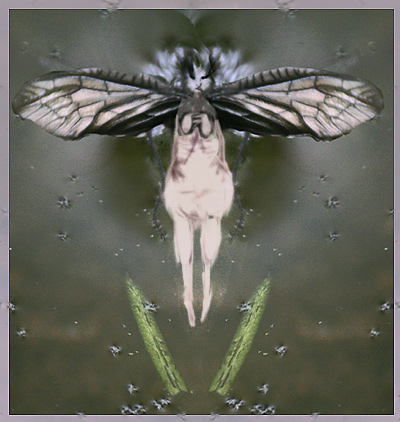

Deconstructing the Papesse
by Susan Slaviero

Begin with the letter “F”
as in: fact, fable. A mitred
belly, a pregnant priest. Take
a stone to my skull. I expect
this, and nothing more. Not
witch-prickers or horsetails,
or stillborn sons.
(But a daughter, perhaps?
Named Agnes or Gilberta,
and raised among the cloistered.)
Think of locusts hexed
with six wings, cutting
teeth, a red rain that
pollutes the cobbled
walks for days. Move on
to “H” as in host, habit.
Hypothesis. One can (just as easily)
expire in a convent as in a parade.
There was a horse involved.
There was no horse. Woman,
eunuch, priestess, pope.
It’s all the same to me —
a three-headed dog,
a Doric column,
a burning back.
 |